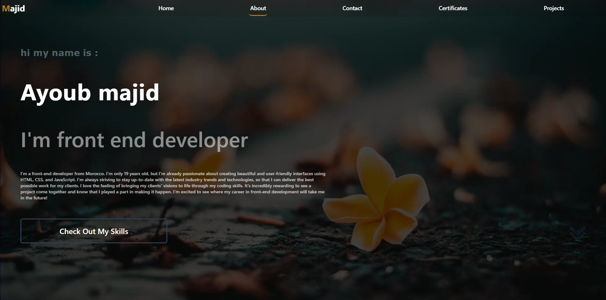
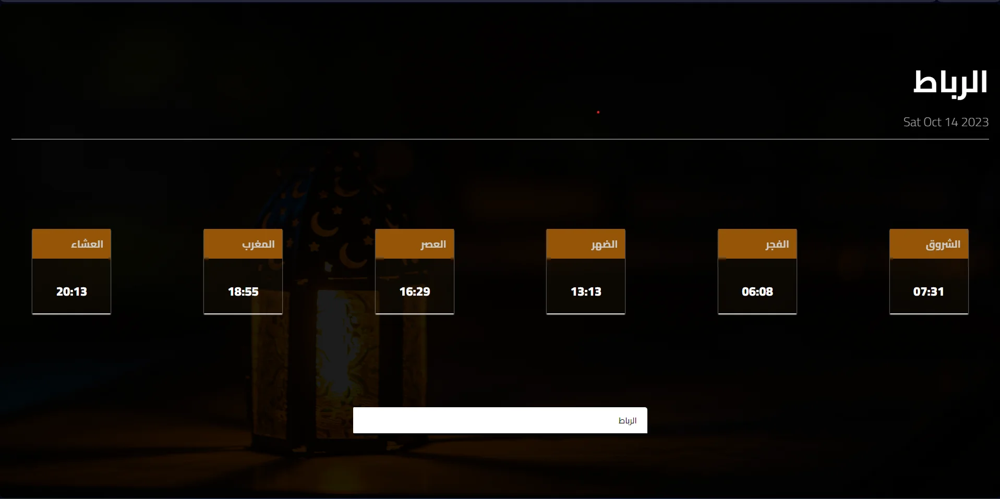
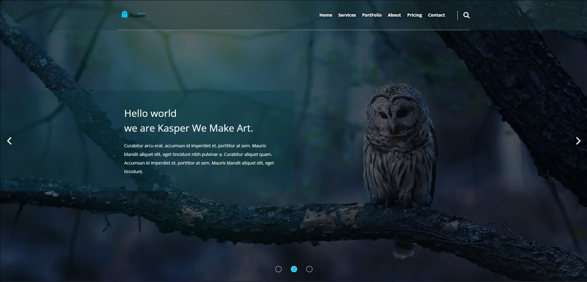
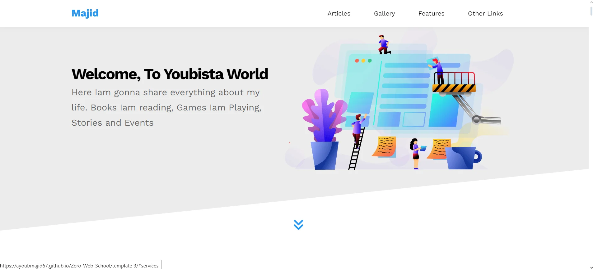
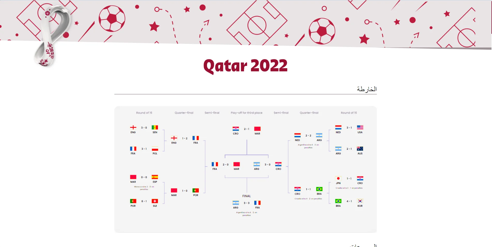
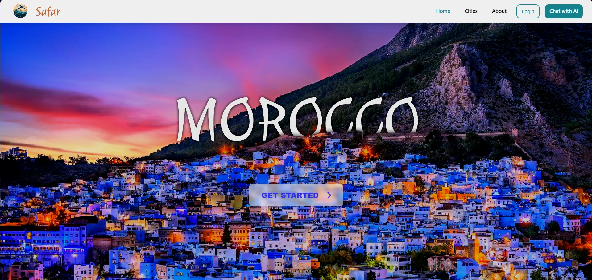
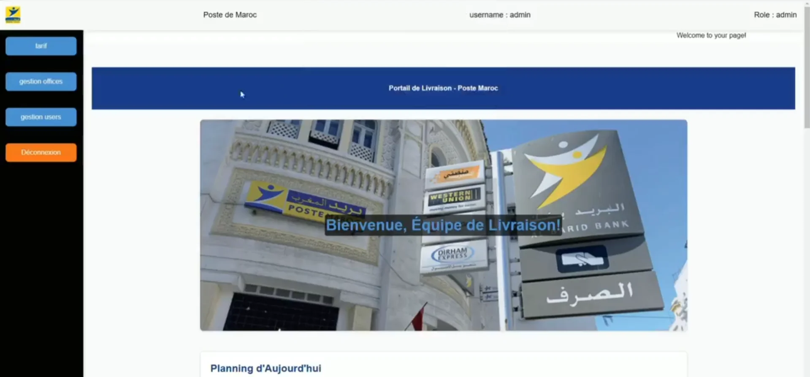
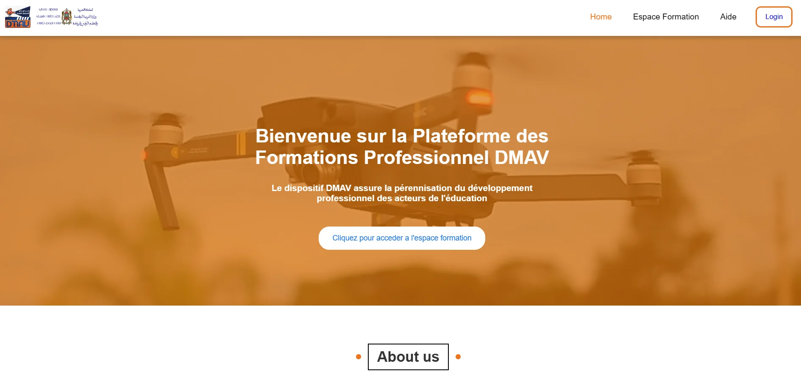
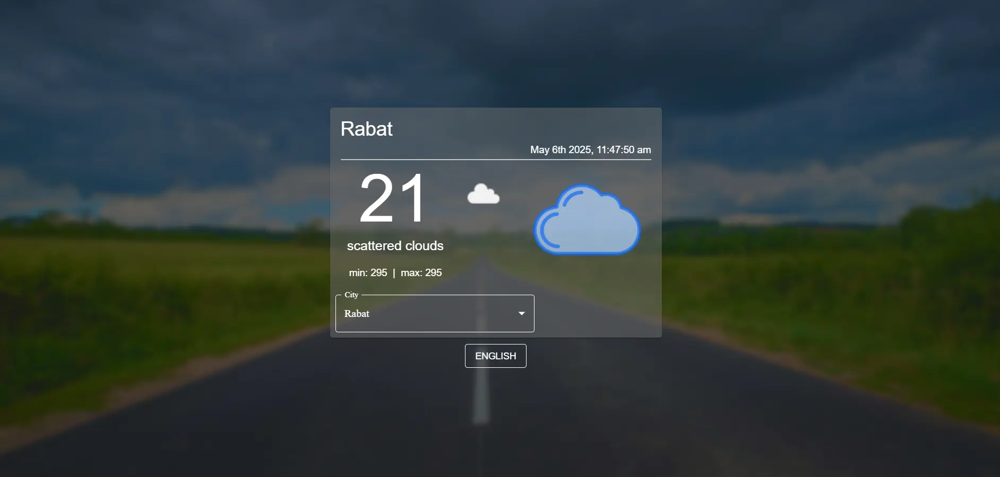

1 - Portfolio 1 [portfolio1]
My portfolio offers a holistic view of me and my offerings. The 'Home' section connects
visitors to my CV and social media, 'About Me' provides background insight, 'Services' and
'Skills' showcase expertise, and 'Contact Me' ensures easy communication—a comprehensive
professional identity.

2 - To Do List [todo-list-1]
This project represents my commitment to designing a customized to-do list system tailored to
my unique needs and preferences. Through meticulous planning and innovative solutions, I'm
on a quest to streamline my daily tasks and ensure that I can manage my time effectively.

3 - Portfolio 2 [portfolio2]
Presenting my new portfolio project—simple and functional, with five sections: Home for a
brief introduction, About for a deeper dive into my skills, Contact for easy connection,
Certificates for achievements, and Projects for showcasing my work.

4 - Api Placeholder Version 2 [api-placeholder]
Version 2 comes with some exciting improvements, making the user experience even better. Feel
free to explore both and let me know which one you prefer! Your feedback is invaluable, so
please take a moment to try it out and share your thoughts.

5 - Morocco Prayer Times [prayer-times]
Launched "Prayer Times of Morocco": a user-friendly tool powered by 'aladhan.com,' offering
personalized schedules with city filtering for accurate and accessible daily prayer times.
Stay tuned for its release and share for the benefit of all. 🕌

6 - Template One [template1]
Proudly presenting my HTML and CSS project: "Template 1"! Crafted a sleek and responsive
website featuring sections for Home, Services, Portfolio, About, and Contact. 💻

7 - Template Two [template2]
Template 2," featuring a sleek and functional layout with six sections: Home, Services,
Portfolio, About, Pricing, and Contact.

8 - Template Three [template3]
Thrilled to unveil my latest web design achievement, "Template 3." This sleek creation boasts
six engaging sections, showcasing my prowess in HTML and CSS

9 - Social Media [social-media]
Launched a dynamic social media-inspired website utilizing a comprehensive API, offering
secure interactions and versatile features. Explore home, profile, and post details pages
with advanced authentication

10 - XO Game
[tic-tac-toe]
launched my very own Tic Tac Toe game! 💡 Developed from scratch with HTML, CSS, and
JavaScript. Big thanks to Yarob Al Mostafa for the amazing tutorial that guided me through
the process!

11 - World Cup 2022
[world-cup]
Created FIFA World Cup 2022 web app using HTML, CSS, JS, and API for live data. Designed
intuitive, responsive interface. Used Axios for async data fetching, ensuring real-time
updates. Tested for compatibility.

12 - Tourst Wep Application
[tourist-app]
Discover Morocco's cities, chat with a bot for details. Developed by Ayoub Majjid and Rochdi,
this web app offers login/register options for users seeking personalized experiences in
exploring Morocco's rich cultural heritage.

13 - Poste de Maroc Application
[poste-maroc]
Our project aimed to merge the "Courier" and "Coles" interfaces into a single, seamless
platform, eliminating the need for multiple logins and accounts. This new system not only
simplifies processes but also empowers employees with more efficient tools.

14 - CNIPE Courses Platform
[cnipe-platform]
I am developing a platform similar to Udemy, integrating secure user authentication and a
rich catalog of formations and courses. Users can comment, review, and enroll in courses.
The system accommodates owners, admins, and regular users

15 - Haelt Portfolio
[haelt-portfolio]
the Portfolio of a Construction Company (Haelt)! 📊 a simple portfolio website for a
construction company. This project highlights various completed projects, showcasing
essential details such as project amount, execution date, and the project owner.

16 - React Todo List
[react-todo]
I'm thrilled to announce the completion of my very first project using React, a simple To-Do
List application that allows users to manage their tasks efficiently. This project has been
an incredible journey, enhancing my skills in front-end development.

17 - React Weather App
[react-weather]
I'm excited to share my second React project: a Weather App providing real-time weather
updates for cities across Morocco, featuring multi-language support and a modern interface.

18 - Stock Management Application
[stock-management]
Developed a stock management application for e-commerce platforms using .NET. It streamlines
inventory tracking, enhances order management, and provides real-time stock updates to
optimize business operations.
19 - Mr Booking App
[mrbooking]
I'm excited to present MrBooking: a travel app for booking hotels and flights across Morocco,
built using React and Spring Boot with a seamless user experience.
20 - My Pocket App
[mypocket]
MyPocket is a student-focused platform offering housing, jobs, and deals,
designed by students in Morocco to simplify everyday life.
21 - Explore Maroc 2030
[explore-maroc]
Explore Maroc 2030 is your AI-powered travel companion,
designed to discover Morocco's gems with smart suggestions and routes.
22 - Distributed Load Balancer Project
[load-balancer]
This project demonstrates a distributed Load Balancer designed for a calculator system using a
master-slave model. It optimizes task distribution across virtualized Ubuntu servers and
utilizes Flask APIs for efficient computation.
23 - INTELLCAP Internal System
[intellcap-system]
Currently leading the design and development of a large-scale internal system at INTELLCAP SARL, Filiale Africa/Morocco, INTELLCAP Corp.
We're building a scalable, modular microservices architecture to automate and centralize operations from recruitment to project management.

24 - Esprit Conseil Portfolio
[esprit-conseil]
🔔 Freelance Project Completed — Collaboration with Esprit Conseil 🇲🇦
Developed a modern Next.js portfolio website for Esprit Conseil, a Moroccan company specializing in Audit, Conseil et Formation Continue. This elegant, user-friendly platform showcases their services and training programs.

25 - SPRING CommerceFlow MS
[spring-commerceflow-ms]
Building a real, structured microservices ecosystem with Spring Boot, featuring Product, Order, Inventory & Notification Services. Includes Spring Cloud tools, MongoDB, MySQL, Kafka, Dockerized infrastructure, Kubernetes deployment, and complete observability with Grafana, Prometheus, Tempo & Loki. Currently, the Product Service is complete with clean architecture and comprehensive testing.

28 - Warning Management System
[warning-management]
As Team Leader at INTELLCAP SARL, I developed and deployed a modern team accountability and warning tracking system. Features include role-based access (Admin & Member dashboards), real-time email notifications, 3-Warning Policy, and a dark/light theme with modern glassmorphic UI. Built with Next.js 15, React 19, JWT Authentication, and SHA-256 password hashing.